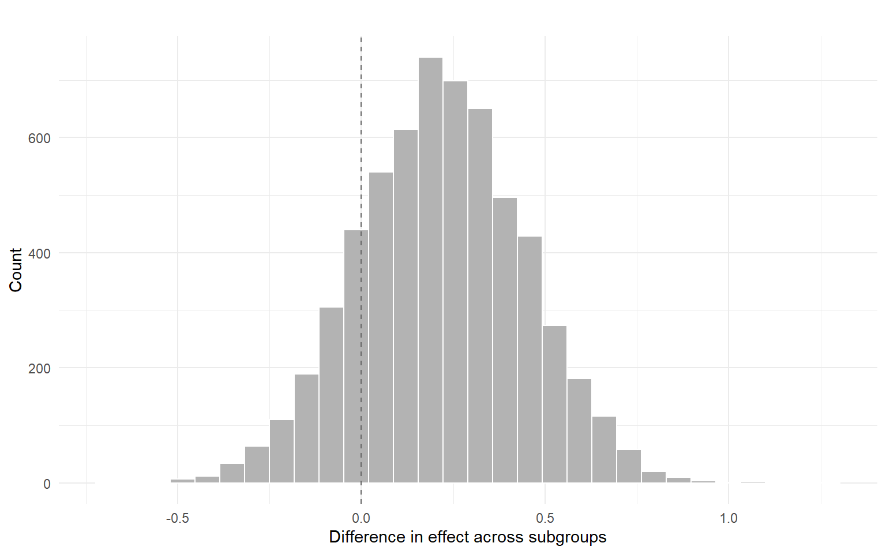
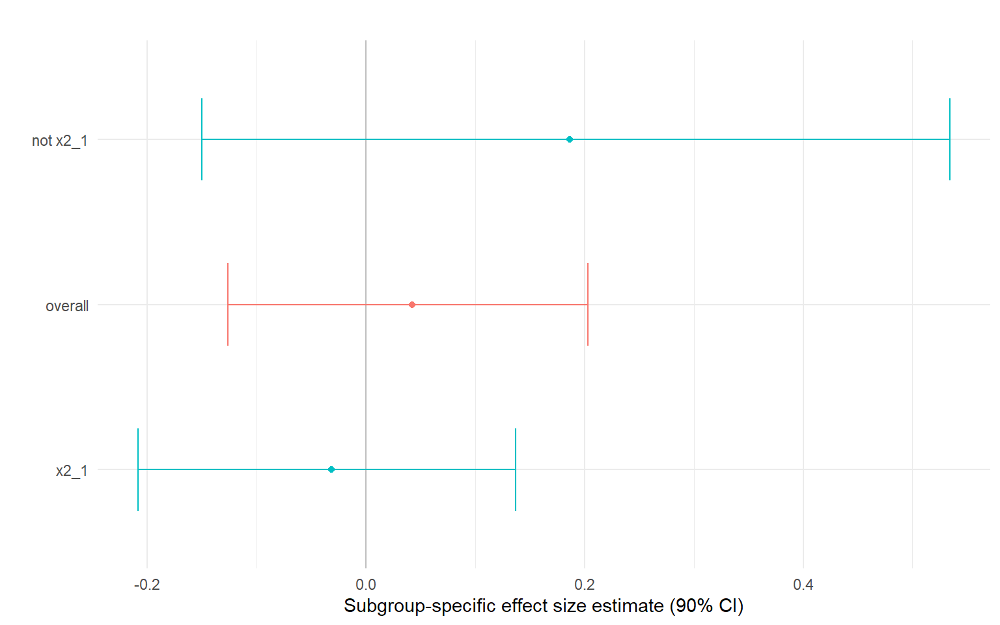

n <- 800
simdata = ps_simulate_data(n)Introduction to princeBART
Overview
princeBART implements Principal Stratification with Bayesian Additive Regression Trees (BART) for causal inference. It estimates treatment effects for compliers—units whose treatment status is affected by an instrument.
If you are unfamiliar with principle stratification or BART, you may refer to Link to background for reference.
While the canonical application is noncompliance in randomized experiments, the framework applies broadly to any setting with:
- An instrument Z that affects treatment uptake but has no direct effect on outcomes
- An endogenous treatment W whose causal effect on Y is of interest
- Covariates X that may confound the Z-W or W-Y relationships
The Setup
We observe:
- Z: Binary instrument (e.g., randomized assignment, geographic variation, policy change)
- W: Binary or endogenous treatment/exposure of interest (Later generalized to count-valued Z)
- Y: Binary outcome
- X: Covariates
And the population consists of four principal strata \(G\) that we don’t fully observe:
| Stratum | W if Z=0 | W if Z=1 |
|---|---|---|
| Compliers | 0 | 1 |
| Never-takers | 0 | 0 |
| Always-takers | 1 | 1 |
| Defiers | 1 | 0 |
We also denote unobserved confounders as \(U\).
Key Assumptions
- Conditional randomization: \(Z \perp\!\!\!\perp (Y(z,w), W(z)) | X\) — the instrument is as-good-as-random given covariates
- Exclusion restriction: Z affects Y only through W
- Monotonicity: No defiers (units for whom Z decreases W)
The key estimand is the Complier Average Causal Effect (CACE), also known as the Local Average Treatment Effect (LATE)—the causal effect of W on Y for units whose treatment is affected by the instrument. Writing \(Y(w)\) for the potential outcome under received treatment \(w\), the conditional effect is
\[ \mathrm{CATE}_C = E\!\left[Y(1)-Y(0)\mid G = Compliers\right]. \]
For a binary outcome, this is the difference in outcome probabilities under treatment and no treatment among compliers.
Simulated Example Data
Let’s create a simulated dataset using the build-in simulation function:
The following describes how the data was generated: Here the defaults give one continuous covariate \(X_1\sim N(0,1)\), one binary covariate \(X_2\sim\mathrm{Bernoulli}(0.5)\), and an unobserved variable \(U\sim N(0,1)\), drawn independently. The generator follows four steps:
\[ \begin{aligned} P(G=g\mid X,U) &=\frac{\exp(\widetilde X^\top\alpha_g+\gamma_g U)} {\sum_{h\in\mathcal G}\exp(\widetilde X^\top\alpha_h+\gamma_h U)}, \quad \mathcal G=\{(0,0),(0,1),(1,1)\},\\ Z\mid X &\sim\mathrm{Bernoulli}\!\left(\operatorname{expit}(\widetilde X^\top\beta)\right),\\ W &=(1-Z)W(0)+ZW(1),\\ Y\mid X,U,G,W &\sim\mathrm{Bernoulli}\!\left( \operatorname{expit}(\widetilde X^\top\theta_G+\delta_G U+\tau_G W)\right). \end{aligned} \]
The pair \(G=(W(0),W(1))\) identifies the principal stratum. By default, each coefficient is drawn once from \(N(0,1)\) for this dataset. The unobserved \(U\) affects strata and outcomes, while assignment \(Z\) depends only on the observed covariates.
The ps_simulate_data(n) is flexible to generate more complex data. You can find additional information at Link to Simulation
The resulting simdata has four components: The data component is the observed data:
head(simdata$data, 5)
#> x1_1 x2_1 Z W Y
#> 1 0.7631757 0 0 0 0
#> 2 -0.1645236 0 1 1 1
#> 3 -0.2533617 1 1 1 1
#> 4 0.6969634 1 1 1 1
#> 5 0.5566632 0 0 1 1The other three components retain information that is known in a simulation:
alldatacontains the observed data, the true stratumG, unobservedU, potential uptakeW0andW1, the assignment probabilitypropensity, and conditional outcome meansmean_y0andmean_y1. These means correspond to assignment \(Z=0\) and \(Z=1\); for binary compliers they also correspond to received treatment \(W=0\) and \(W=1\).weightscontains the coefficients actually used to generate the data. Reusing it allows new datasets to be generated under the same model.stratum_weightsis a matrix whose rows indexW0and columns indexW1. Zero entries exclude strata; positive entries set relative weights before normalization, rather than marginal stratum probabilities.
head(simdata$alldata[c("G", "U", "W0", "W1", "propensity",
"mean_y0", "mean_y1")], 5)
#> G U W0 W1 propensity mean_y0 mean_y1
#> 1 (0,0) -1.6521103 0 0 0.6691012 0.3198400 0.3198400
#> 2 (1,1) 0.0690946 1 1 0.4572363 0.7512098 0.7512098
#> 3 (0,1) 2.3905767 0 1 0.6378164 0.7475662 0.7362096
#> 4 (1,1) -1.4617717 1 1 0.8119682 0.9883143 0.9883143
#> 5 (1,1) -0.9848063 1 1 0.6246209 0.9201217 0.9201217
names(simdata$weights)
#> [1] "g_intercept" "g_x1" "g_x2" "g_u" "z_intercept"
#> [6] "z_x1" "z_x2" "y_intercept" "y_x1" "y_x2"
#> [11] "y_u" "y_w"
simdata$stratum_weights
#> [,1] [,2]
#> [1,] 1 1
#> [2,] 0 1Basic Usage
princeBART uses a 2SLS-style formula: Y ~ covariates | Z | W. The following code will fit the model and print the summary:
# Set up parallel backend
plan(multisession, workers = 4)
# Fit the model
fit <- prince_BART(
Y ~ x1_1 + x2_1 | Z | W,
data = simdata$data,
n_chains = 4,
n_warmup = 1000,
n_samples = 1500
)
summary(fit)
#> Principal Stratification BART Summary (Binary Uptake)
#> =====================================================
#>
#> Principal Strata Distribution:
#> variable mean median sd mad q5 q95
#> 1 compliers 0.1664077 0.1660886 0.02818767 0.02837224 0.1210085 0.2131449
#> 2 never-takers 0.1450925 0.1449459 0.01575088 0.01583875 0.1194318 0.1711149
#> 3 always-takers 0.6884998 0.6888042 0.02514888 0.02532597 0.6463705 0.7292424
#> rhat ess_bulk ess_tail
#> 1 1.012171 339.3822 640.8274
#> 2 1.008330 1090.5747 2780.4247
#> 3 1.006121 464.9133 1073.0934
#>
#> Mixed ATE for Compliers:
#> variable mean median sd mad
#> 1 Y(0) | compliers 0.7670455 0.7708029 0.09532668 0.09825531
#> 2 Y(1) | compliers 0.5972219 0.6101731 0.13388239 0.12534750
#> 3 Y(0) | never-takers 0.6432346 0.6442694 0.05686322 0.05810029
#> 4 Y(1) | always-takers 0.7919161 0.7928559 0.02165061 0.02159945
#> 5 Mixed ATE for compliers -0.1698236 -0.1604736 0.16312044 0.16330291
#> q5 q95 rhat ess_bulk ess_tail
#> 1 0.6049514 0.91728303 1.003643 719.6918 941.1982
#> 2 0.3528433 0.79070085 1.010824 300.3932 517.1525
#> 3 0.5489610 0.73496965 1.001001 1105.2266 2714.1037
#> 4 0.7550472 0.82602992 1.005900 667.1874 1445.0949
#> 5 -0.4533644 0.08550196 1.010171 383.5865 690.7001By default, the mixed ATE for Compliers are printed. In this simulation, the result is 0.1876226. There are other effects that can be calculated from the fitted object, such as mixed ATE for treated Compliers. You can find additional information at Link to effects
We identify the simulated compliers using their known potential uptake and average their conditional mean differences:
\[ \tau_{C,\mathrm{truth}} =\frac{1}{n_C}\sum_{i:W_i(0)=0,\ W_i(1)=1} \left(\mathrm{mean\_y1}_i-\mathrm{mean\_y0}_i\right). \]
This is the expected sample ATE conditional on the simulated covariates, \(U\), and strata. The generator does not return both realized binary potential outcomes, so their realized sample ATE is unavailable.
truth <- simdata$alldata
is_complier <- truth$W0 == 0 & truth$W1 == 1
stopifnot(any(is_complier))
true_sate_c <- mean((truth$mean_y1 - truth$mean_y0)[is_complier])
true_sate_c
#> [1] -0.01159444We can also analyze the data using Two Stage Least Squares (2SLS), which is the convention approach for principle stratification.
2SLS first predicts received treatment W from instrument Z and the covariates, then regresses Y on that prediction and the same covariates. Run the fitting block above and the comparison block below interactively, or enable evaluation of both blocks when rendering. The comparison uses the sample estimand from extract(); the earlier default summary(fit) reports the mixed estimand.
first_stage <- lm(W ~ Z + x1_1 + x2_1, data = simdata$data)
two_sls_data <- simdata$data
two_sls_data$W_hat <- fitted(first_stage)
fit_2sls <- lm(Y ~ W_hat + x1_1 + x2_1, data = two_sls_data)
tsls_estimates <- unname(stats::coef(fit_2sls)["W_hat"])
bart_effects <- as.data.frame(extract(fit, "sate_c")[[2]])
bart_mean <- bart_effects$mean[
bart_effects$variable == "Sample ATE for compliers"
]
comparison <- data.frame(
Method = c("Simulation truth",
"princeBART posterior mean",
"2SLS estimates"),
Estimate = c(true_sate_c, bart_mean, tsls_estimates)
)
knitr::kable(comparison, digits = 3)| Method | Estimate |
|---|---|
| Simulation truth | -0.012 |
| princeBART posterior mean | -0.174 |
| 2SLS estimates | -0.012 |
Effect Heterogeneity by Segments (mostly unchanged, but we may need some non-linearity?)
simdata = ps_simulate_data(n, x1_transform = "relu")
fit <- prince_BART(
Y ~ x1_1 + x2_1 | Z | W,
data = simdata$data,
n_chains = 4,
n_warmup = 1000,
n_samples = 1500
)We can automatically find segments (subgroups) with different conditional complier effects using a shallow regression tree on posterior mean CATE_C(x). The segment-level summaries in res$effects correspond to subgroup-specific average effects among compliers, obtained by averaging conditional effects within each covariate-defined segment. Differences across segments highlight departures from effect homogeneity and provide an interpretable summary of treatment effect heterogeneity.
res <- segment_heterogeneity(
fit,
min_compliers_bucket = 50,
plot = TRUE,
contrast = TRUE
)
res$contrast$summary
#> mean sd ci_lower ci_upper p_gt0
#> 1 0.2178362 0.2267148 -0.1519342 0.5904339 0.8278333
res$plot$diff
The segment-level summaries in res$effects correspond to subgroup-specific average effects among compliers, obtained by averaging conditional effects within each covariate-defined segment. Differences across segments highlight departures from effect homogeneity and provide an interpretable summary of treatment effect heterogeneity. Segments are constructed post hoc to summarize heterogeneity in the posterior distribution of CATE_C(x).
res$effects
#> segment mean sd ci_lower ci_upper p_gt0 n n_group
#> overall 0.0425 0.100 -0.126 0.203 0.676 800 257.3
#> x2_1 -0.0311 0.104 -0.208 0.137 0.387 383 168.7
#> not x2_1 0.1868 0.209 -0.150 0.534 0.814 417 88.6
res$plot$effect
Generalization to target population (needs updated simulation framework)
in the ps_simulate_data.R, generate a new function ps_simulate_target(), which takes the simdata object and return another simdata object, that is generated with the same weight, but different dstribution of x1 and x2. the parameter should be the following: source: a named list returned by ps_simulate_data() ?
Count-valued Z
For count or ordinal uptake \(W\), \(Z\) remains binary. Each principal stratum becomes a pair \(G=(W(0),W(1))=(a,b)\), representing the uptake when the instrument is set at 2 different levels. The current ordinal model assumes \(b\leq a\): assignment can reduce uptake.
The causal effect of interest is:
\[ E[Y (1)-Y(0)\mid G=(a,b)] \]
BART models potential uptake and outcome probabilities while imputing the missing member of each pair. Fit this model with uptake_type = "ordinal". See Count data for a full simulation using count data.